relu <- function(x) ifelse(x >= 0, x, 0)
sigmoid <- function(x) 1 / (1 + exp(-x))
softmax <- function(x) exp(x) / sum(exp(x))Deep learning
class notes
What is deep learning?
Deep learning is a subset of machine learning that is somehow inspired by the structure and function of the human brain. Following the logic of small units interconnected, like neurons in the brain, these models are called deep neural networks because they have many layers of interconnected nodes, or “neurons,” that allow them to learn increasingly complex patterns from the data. Deep learning is used in a variety of applications such as image recognition or natural language processing.
A good way to understand the novelty of these models is to compare them with the simplest and most widespread model that we know, linear regressions. There are several key differences between neural networks and linear regression. Many of these concepts are specific to deep learning, and we will learn about them in this module:
Complexity: Neural networks are capable of modeling a much wider range of problems than linear regression.
Inputs and outputs: Neural networks can have multiple inputs and multiple outputs, whereas linear regression typically has only one output. This also applies to the dimensions of both input and outputs: while linear models can only have a vector as input, neural networks can receive and produce all sorts of data, like images or text.
Non-linearity: Neural networks are non-linear models, meaning that the outputs are not directly proportional to the inputs, as it happens with the linear regressions.
Number of layers: Neural networks can have multiple layers, each with its own set of weights and biases. Linear regression, on the other hand, has only one layer.
Training: Neural networks require a lot of data to be trained, and this is done through an iterative process known as backpropagation. Linear regressions, on the other hand, can be trained with a smaller amount of data and it is typically trained using a closed-form solution.
Flexibility: Neural networks are more flexible and can be adapted to different tasks, such as image classification, speech recognition, or natural language processing. Linear regression is a simpler model and it is mostly used for predicting numerical values.
Explainability: Linear regression models are considered to be more explainable than neural networks because the relationships between inputs and outputs are easy to understand. The coefficients of the linear regression model can be used to determine the relative importance of the inputs to the output. On the other hand, the inner workings of a neural network, such as the values of the weights and biases, are difficult to interpret and understand. There are techniques that aim to make neural networks explainable, but they are limited.
Fully connected neural networks
Deep learning models are composite models. Also known as neural networks, these models have a simple unit —the neuron—, that is used several times to build the full model.
The neuron
In the traditional neural networks, the basic unit of computation is really simple. The neuron starts with the weighted sum of all the inputs it receives. These weights are the parameters of the model, which need to be optimized. A bias is added to this sum —also a parameter of the model—, and this sum goes through a non-linear activation function. This means that if the input is sufficiently strong, the neuron will activate, and will create an output.
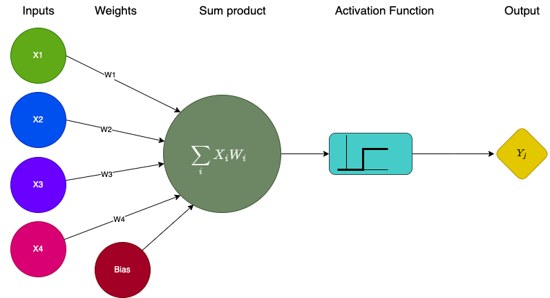
In summary, a neuron has:
Inputs: Usually, features of a dataset.
Weights (to be optimized through training): The real values associated with the features, expressing their relative importance.
A bias (also to be optimized): Allows to shift the activation function towards the positive or negative side (it is the equivalent to the constant in a linear function).
An activation function (there are several possible activation functions, and the choosing one is an hyper-parameter of the model): Required to add non-linearity to the model.
The network
A fully connected neural network (FCNN) contains:
An input layer that has the input data of the observation. The size of this layer is determined by the dimensionality of the input.
An output layer which encodes the predicted values. The size of this layer is determined by the dimensionality of the output.
A number of hidden layers. The first hidden layer receives the original inputs, while the following layers receive as inputs the outputs of the previous layers. This composition of layers creates a system with increasing levels of abstraction. The number of nodes in each hidden layer as well as the number of hidden layers is arbitrary (a hyper-parameter).
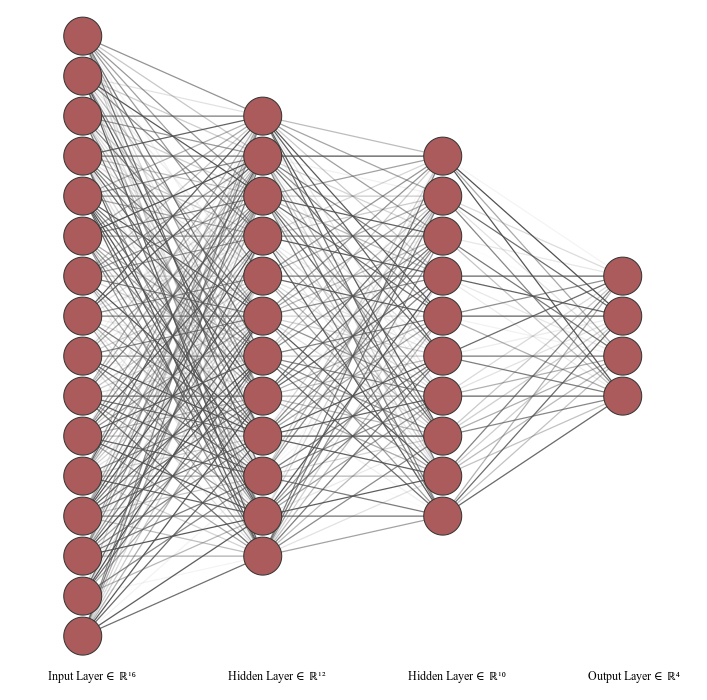
Activation functions
The activation functions are a central element of a network because they introduce the non-linearity into the model. This allows the neural networks to be more expressive, in the sense that they can represent complex relations between the combination of different inputs and the output.
When they are used as part of a large network, each node in a hidden layer receives a linear combination of the non-linear output of the previous hidden layer, and creates a new non-linear signal —using its activation function— to be sent to the next hidden layer. This process allows the network to capture multiple complex relations.
Some of the most common functions used are the Rectified Linear Unit (ReLU), the Sigmoid, and the Softmax1.
Their definitions are actually quite simple, and we can write a one-line function for each of them to see how they look.
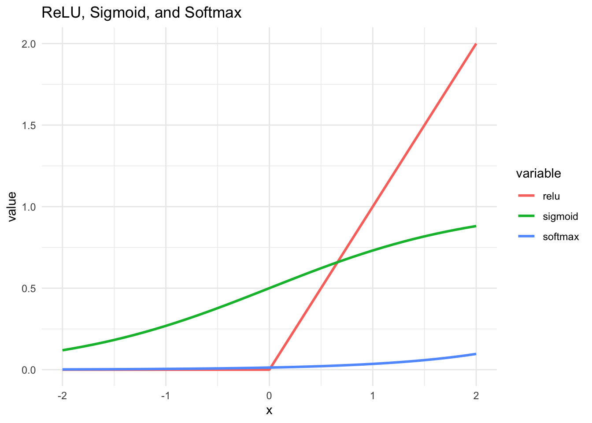
Which activation function to use? There is no single answer, but here are some tips:
ReLU’s are really popular, but they are only meant to be used on hidden layers.
The crucial decision is which activation function to use for the final (output) layer, and this depends of the type of problem:
If your prediction is a binary classification, you can map to the probability space using a Sigmoid.
If you have a classification problem with multiple categories, you can use a Softmax, as this will create a probability vector.
If the problem is a regression, you can use the Identity (which is actually linear).
Optimization
Backpropagation
The weights of the network are initialized with random values, and are used to make a prediction based on the input data.
A loss function2 is defined to measure how well the model is performing. This loss function takes the predicted output and the true output, and returns a value that indicates how far is the prediction from the true output (the error).
The error is then backpropagated through the network, which means that the error is used to adjust the weights of the network in a way that reduces the error. This is made using an optimization algorithm, such as gradient descent. This process is repeated until the error is minimized to an acceptable level.
Gradient descent
There are several possible optimizers used in deep learning. One of the first to be used was gradient descent, which takes the following steps:
The gradients of the loss with respect to the parameters are calculated using the chain rule3. The gradients indicate the direction in which the parameters should be adjusted in order to minimize the loss.
The parameters are updated in the direction that minimizes the loss. This is done by taking a small step (called the learning rate) in the opposite direction of the gradients.
In practice, the gradient descent is very costly and it’s not used. But several different implementations that share it’s spirit, such as Stochastic Gradient Descent or Adam are used.4
Batches
When training a neural network, the backpropagation is done through batches of data. This means that the computation of the loss, the gradient, and the update of the parameters is done over a subset of the training data. The amount of observations used at each step is known as batch size, and it can be adjusted as an hyper-parameter5.
Once the training has done enough batches to go through all the data points, it has completed an epoch. But the training does not stop there. We can train the model by running several epochs. This is yet another hyper-parameter to set6.
Dropout
Neural networks are very flexible models7 and have a lot of parameters. This makes them prone to overfitting. One of the most important techniques to prevent this is the dropout, which limits the learning capacity that the model has over the training data on every batch, randomly, so it can learn a more general representation of the process.
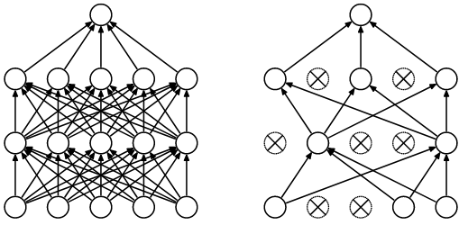
Convolutional neural networks
Convolutional neural networks (CNN) are a type of network that uses convolutions to extract abstract features of the previous layer, which makes them particularly good to work with 2 dimensional data —like images— as they can capture spacial patterns.
Images as data
Before we move into CNNs, we need to understand how images can be represented as data.
The MNIST database is a large database of handwritten digits that is commonly used for training various image processing systems. This classic benchmark has 60K images of 28x28 pixels.
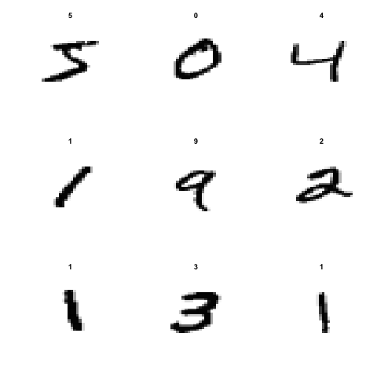
Each black & white image can be thought of as a matrix. Each cell of the matrix represents a pixel, and the value is a representation of the grey scale, between 0 (white) and 255 (black).
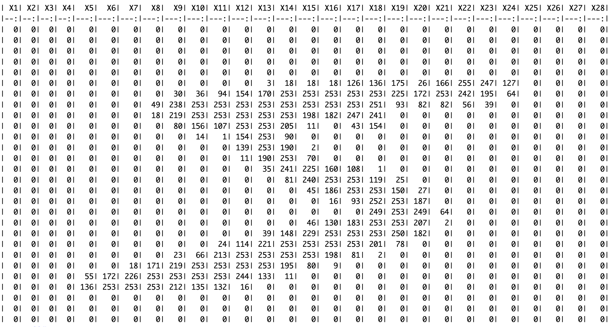
This will completely change the logic of machine learning models. Until now, the observations had a vector of features \({x_1,x_2,x_3...x_n}\) and a expected output \({y}\). Now, an image (matrix) can be an observation’s set of features. Convolutions are operations over matrices, and hence can deal with this new type of data.
What is a convolution?
A convolution is a mathematical operation between two matrices, where a small matrix, the filter or kernel, is slid over the input data. At each position, the dot product is computed, and its sum is the value used on that position on the resulting matrix.

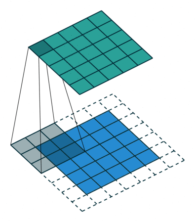
The values of the filter are like the weights of the FCNN, they are trained through backpropagation.
Each layer of the network will have a set of filters.
The number of filters per layer, their dimension, the activation function used over the output of the convolution, and the stride8 of the convolution are hyper-parameters to define.
The filters are combined with activation functions, to work as detectors of an attribute in a region of image. They usually start by recognizing simple features, like lines and diagonals, and build up more complex representations in the final layers, such as faces (on face-recognition problems).

The image received as input creates a new representation for each filter the layer has. These are aggregated through a sum, and the bias is added before going through the activation function.

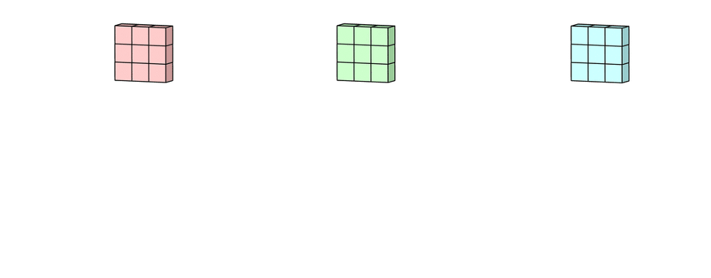
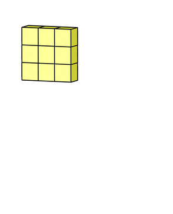
Max-pooling
CNN layers are usually combined with a dimensionality reduction technique called max-pooling. This helps to reduce the size of the input, so the following layers just focus on the perceived attributes. Max-pooling also slides through the matrix and picks the maximum value of each region of the matrix. The size of the window and the stride are hyper-parameters of the network. For example, a 2x2 window would reduce the size of the matrix by half.

Summary: In this lecture, we explored the basics of artificial neural networks (ANNs) and their architectures, with a focus on fully connected neural networks (FCNNs) and convolutional neural networks (CNNs). We began by discussing the fundamental building blocks of ANNs, including neurons, weights, biases, and activation functions. We then delved into FCNNs, which are composed of multiple layers of neurons that are fully connected to each other. We discussed how these networks learn the relationships between input and output data using backpropagation and gradient descent algorithms. Next, we explored CNNs, which are specifically designed to process image and video data. We discussed the intuition behind convolutional layers, which use filters to extract features from input data, and pooling layers, which reduce the spatial dimensionality of the data.
Discussion
Image recognition technologies bring two types of wrongs that reinforce social inequality:
- Technologies that are wrongly done.
- Technologies that are wrong to exist in the first place.
Among the first type of problems, there are many cases where the systemic inequalities that surround the design of the models create the conditions that reinforce inequalities.
Imagine a tech company building a facial recognition software in Silicon Valley. All the employees working on R&D are cisgender white men graduated from Ivy League universities. They need to build a dataset with faces, so they crowd-source images among their friends, family and their contacts on social media. Given that they relate mostly with other cis white men, in their training data there is an over representation of this group, while other races and genders are not well covered. While they work on the development, they do small tests using their own faces; they can see that the model has a high performance, and it is capable of recognizing all members of the team. They also split the gathered data into train and test. Given that the bias is present in the entire dataset, and that it did not occur to them that they should test the accuracy of the model on different demographics, they randomly split the data and, as the bias is both in train and test, they corroborate that the model has a high accuracy.
The outcome would be a model that has a high performance on cis white men, a lower performance on white women and black or brown men, and an even worse performance on black and brown women.
This outcome is what (buolamwini2018?) found in their work Gender Shades9.
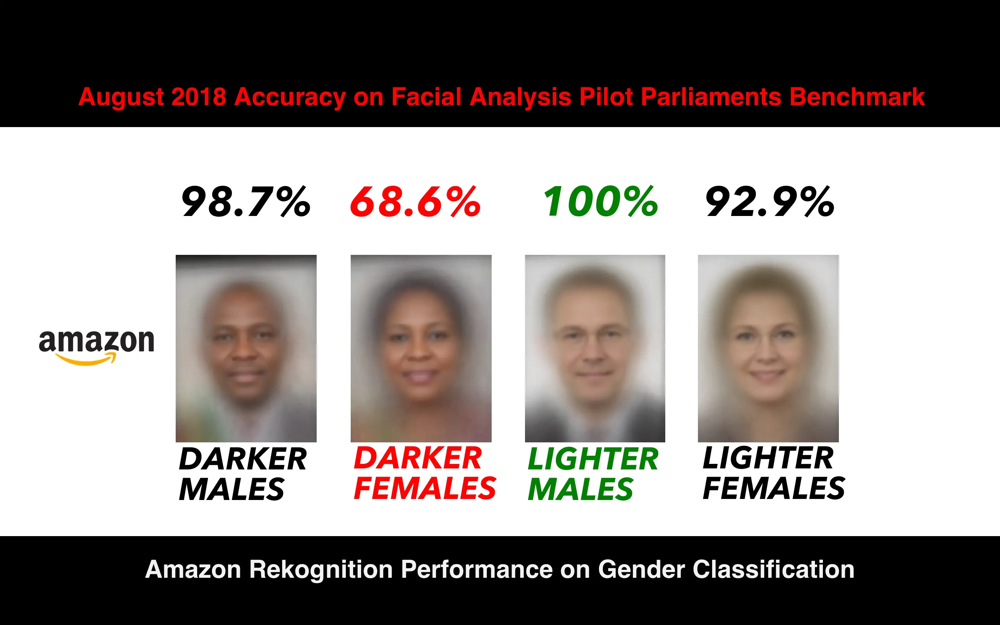
Now imagine that this tech company, knowing that their product is good, gets hired by the police department to build an automatic street patrol that matches the faces of people walking on the streets. They are given the face images of some fugitives, in order to make an automatic check of every person that walks by the camera.
The outcome is that they have many more false matches on racialized people, and especially racialized women, which results in arbitrary detentions and background checks.
This is the case with facial matching algorithms.
Another problem with this type of technology is where it gets applied.
As shown by Najibi (2020), the implementation of the Project Green Light (PGL) surveillance program is a striking example: The distribution of high-definition cameras installed throughout the city of Detroit (used for face recognition) highly correlates with primarily Black communities.
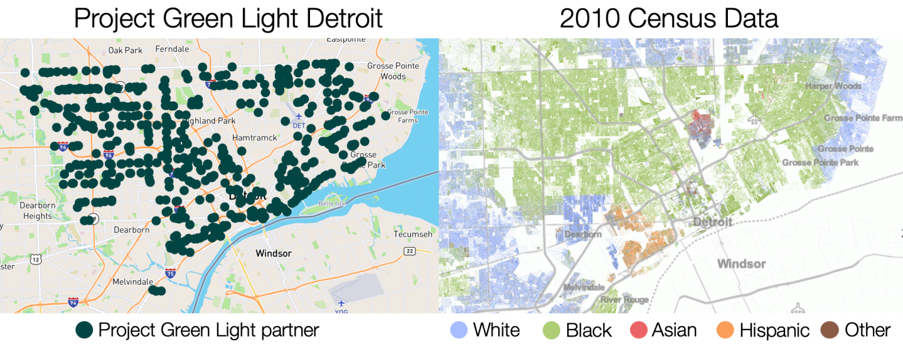
This example reflects on the problems of wrongly done AI, but also raises other questions:
Is it correct to have automatic surveillance of the population? Who decides on the uses of AI? Shouldn’t the subjects of AI —in this case the people walking on the streets— have a call on this?
Who implements AI? What happens if racist institutions decide where and how to use AI?
The unbalanced distribution over the harms made by AI are not the only problem. The benefits of AI are also unbalanced. For example, if a model for skin-cancer detection is based on a biased dataset, then it’s predictions will be less useful for the underrepresented populations.
References
Bai, Kunlun. 2019. “A Comprehensive Introduction to Different Types of Convolutions in Deep Learning. Medium.” February 11, 2019. https://towardsdatascience.com/a-comprehensive-introduction-to-different-types-of-convolutions-in-deep-learning-669281e58215.
Bansac, Florian. 2018. “Computer Vision and Convolutional Neural Networks. AILEPHANT.” October 10, 2018. https://ailephant.com/computer-vision-convolutional-neural-networks/.
Bluche, Théodore. 2017. “Deep Neural Networks – Applications in Handwriting Recognition.” São Paulo, Brasil. http://www.tbluche.com/presentations.html.
Buolamwini, Joy. 2019. “Response: Racial and Gender Bias in Amazon Rekognition — Commercial AI System for Analyzing Faces. Medium.” April 24, 2019. https://medium.com/@Joy.Buolamwini/response-racial-and-gender-bias-in-amazon-rekognition-commercial-ai-system-for-analyzing-faces-a289222eeced.
Harris, Mark. 2015. “Hierarchical Features. NVIDIA Technical Blog.” November 4, 2015. https://developer.nvidia.com/blog/deep-learning-nutshell-core-concepts/hierarchical_features/.
“Max-Pooling / Pooling - Computer Science Wiki.” n.d. Accessed January 10, 2023. https://computersciencewiki.org/index.php/Max-pooling_/_Pooling.
Najibi, Alex. 2020. “Racial Discrimination in Face Recognition Technology. Science in the News.” October 24, 2020. https://sitn.hms.harvard.edu/flash/2020/racial-discrimination-in-face-recognition-technology/.
Shafkat, Irhum. 2018. “Intuitively Understanding Convolutions for Deep Learning. Medium.” June 7, 2018. https://towardsdatascience.com/intuitively-understanding-convolutions-for-deep-learning-1f6f42faee1.
Srivastava, Nitish, Geoffrey Hinton, Alex Krizhevsky, Ilya Sutskever, and Ruslan Salakhutdinov. 2014. “Dropout: A Simple Way to Prevent Neural Networks from Overfitting.” Journal of Machine Learning Research 15 (56): 1929–58. http://jmlr.org/papers/v15/srivastava14a.html.
Footnotes
But there are many others, you can check them here https://keras.io/api/layers/activations/↩︎
The loss function is a function composed by the model’s predicted output and the true output \(f(\hat{y}\ ,y)\). The model’s output is itself a composite function of the inputs and the model’s parameters \(f(X,P)\).↩︎
The chain rule states that the derivative of a composite function is equal to the product of the derivative of the outer function with respect to the inner function and the derivative of the inner function with respect to the parameter \(h(x)=f(g(x)) \rightarrow h'(x) =f'(g(x))g'(x)\). This is used to disentangle the composite nature of the nested layers of the model.↩︎
Check https://keras.io/api/optimizers/ for the explanation of the different implementations↩︎
There is a trade-off. A very small batch-size would allow to use all the information that each observation provides, but it would be computationally expensive, and prone to overfitting.↩︎
A nice trick is to use early stopping, which automatically stops the training when there are no more significant improvements. Check it here: https://keras.io/api/callbacks/early_stopping/↩︎
They are so flexible that they are universal aproximators, which means that no matter which is the real data generating process, there is a neural network that can approximately approach to it, replicating the results.↩︎
The number of pixels to move when sliding through the input matrix. For example, if a neural network’s stride is set to 2, the filter will move two pixels at a time.↩︎